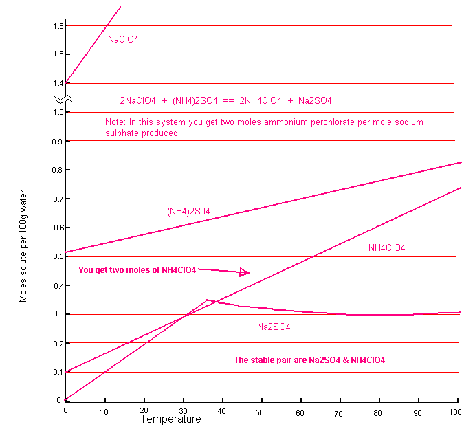

| Molecular weights | |||
|---|---|---|---|
| NH4ClO4 | Na2NO3 | NH4SO3 | NaClO4 |
| 117.5 | 142 | 132 | 122.5 |
The graph below shows the solubility's of the relevant salts. The 'stable pair' is Ammonium Perchlorate and Sodium Sulphate. The solubility's of theses two salts are not as far apart as we would like but you should note that you will get two moles of Ammonium Perchlorate for every mole of Sodium Sulphate. This will make it possible to get a crop of Ammonium Perchlorate from the system. If you work at 0.25 moles and keep the temperature of your system above 30C then you should get a crop of Ammonium Perchlorate crystals. You should cool slowly to get large crystals of Ammonium Perchlorate which will wash easily. I do not have the mutual solubility graph of the stable pair. This system is not as favourable to one off batch processing as the other systems that used Ammonium Chloride and Nitrate.
So for every 100ml water, dissolve in 2 * 0.25 = 0.5 moles (61.25g) Sodium Perchlorate and 0.25 moles (33g) of Ammonium Sulphate and dissolve in the water at 80C. Cool slowly to 30C to obtain your Ammonium Perchlorate. You will get 2 * 0.25 = 0.5 moles Ammonium Perchlorate but you won't be able to precipitate all of this. You should be able to ppt about 0.2 moles (23g) of Ammonium Perchlorate, not a good yield.

HIT THE BACK BUTTON ON YOUR BROWSER